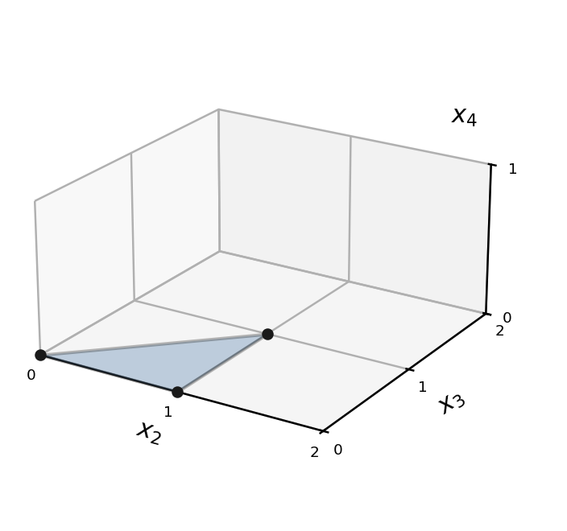
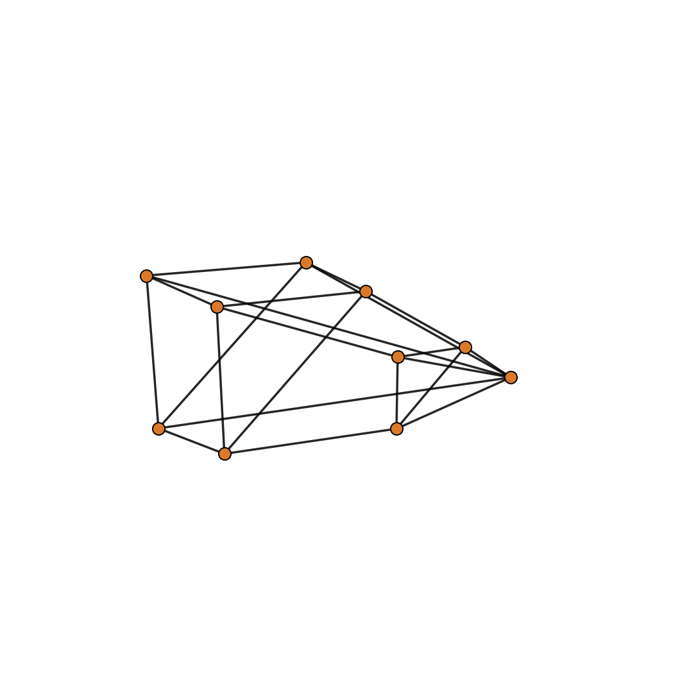

Hilbert functions over the exterior algebra and f-vectors in higher rank I: Amata-Crupi monomial modules, Kozlov polytopes, and r-vectors of simplicial complexes
Much of the combinatorial content and the rank-two vertex structure is formalized in Lean 4 with Mathlib, about 3,300 lines in twelve files, with margin marks tracking formalization status.
Abstract
Let $E$ be the exterior algebra on $n$ generators over a field, and let $F$ be a graded free $E$-module with $r$ generators, of degrees $d_1 \le \dots \le d_r$. We determine the convex hull of the set of Hilbert functions of the quotients $F/M$, where $M$ runs over the monomial submodules of Amata and Crupi. The hull is the Minkowski sum of $r$ shifted copies of one and the same simplex: the Kozlov simplex, which Kozlov proved in 1997 to be the convex hull of the $f$-vectors of simplicial complexes on $n$ vertices. For $r=1$ the statement is Kozlov's theorem, so this is a rank-$r$ generalization of it. We give a self-contained proof, including a proof of Kozlov's theorem from the local Lubell-Yamamoto-Meshalkin inequality, which is in essence Kozlov's own second proof, and the facet description of the Kozlov simplex that this proof contains. Along the way we isolate the class of submodules for which the argument works, the ideal-direct-sum modules, and show by example that the Hilbert function of a graded submodule outside that class need not be a shifted sum of $f$-vectors at all. The combinatorial content is stated separately, in language that uses no algebra, as a result on $r$-vectors of simplicial complexes and their $ff$-vectors. Finally we determine the vertices of the Minkowski sum at rank two: which sums of vertices of the summands survive as vertices. The facet descriptions at rank two, conjectured in the first version of this paper, and the vertex and facet descriptions at every rank are proved in Part IV of this series.
Problem
The paper determines the convex hull of Hilbert functions of quotients F/M of a graded free module over the exterior algebra, where M ranges over Amata–Crupi monomial submodules. This generalizes Kozlov's 1997 theorem on the convex hull of f-vectors of simplicial complexes to higher rank.
Approach
The hull is shown to equal a Minkowski sum of r shifted copies of the Kozlov simplex. Kozlov's theorem and the facets of his simplex are re-proved from the local LYM inequality. The argument is isolated to ideal-direct-sum modules and restated purely combinatorially via r-vectors of simplicial complexes and their ff-vectors. Results are checked by exact computation and largely formalized in Lean 4/Mathlib, using only the standard axioms.

Figure 2: Summands and their Minkowski sum, n=3 and \vec{d}=(0,1) , in the coordinates (x_{2},x_{3},x_{4}) after dropping the constant x_{1} . Within each row the three panels share one viewpoint and one scale.
Results
The main theorem identifies the hull as the Kozlov polytope, and the vertices of the Minkowski sum are determined at rank two. An example shows that a graded submodule outside the ids class can have a Hilbert function that is not a shifted sum of f-vectors. The Lean development is released on GitLab/GitHub and Zenodo, with a correspondence file mapping each result to its Lean declarations.

Figure 3: Schlegel diagrams of \operatorname{RA}(\vec{a};0,1)=\angle(\vec{a})+\operatorname{shift}^{1}(\angle(\vec{a})) for n=4 , the smallest case where the leg vector changes the combinatorics. The polytopal face-vectors are (1,10,21,18,7,1) and (1,11,24,21,8,1) , differing by (1,3,3,1) in every dimension: one extra vertex, carrying three extra edges, three extra 2 -faces and one extra facet. Cr